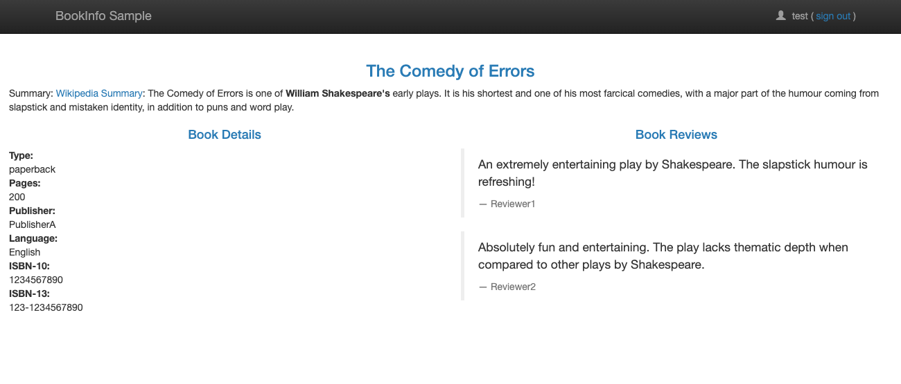
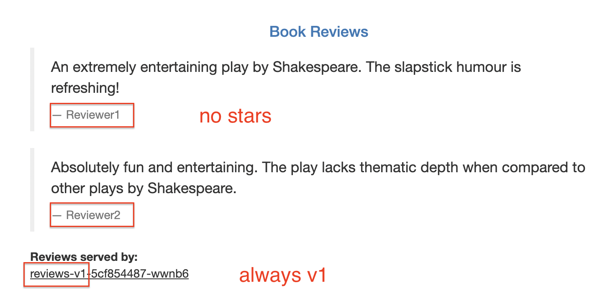
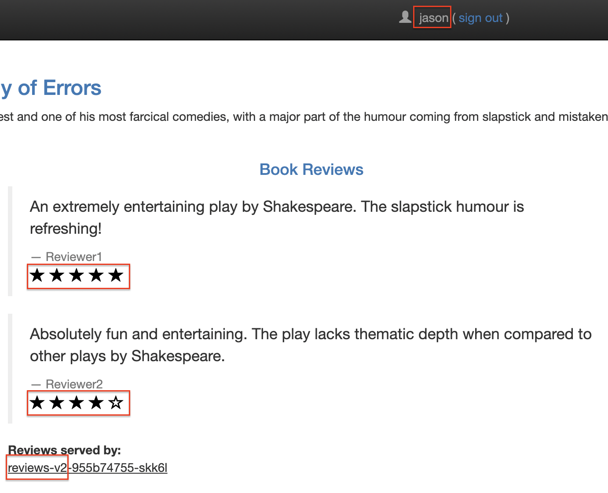
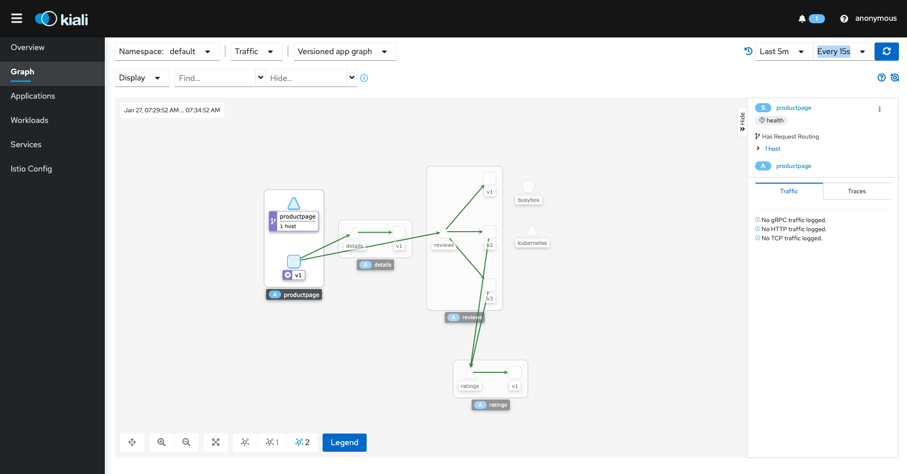

Istio
1. Overview
An Istio service mesh is logically split into a data plane and a control plane.
- The data plane is composed of a set of intelligent proxies (Envoy) deployed as sidecars. These proxies mediate and control all network communication between microservices. They also collect and report telemetry on all mesh traffic.
- The control plane manages and configures the proxies to route traffic.

A service mesh is a dedicated infrastructure layer that you can add to your applications. It allows you to transparently add capabilities like observability, traffic management, and security, without adding them to your own code. The term “service mesh” describes both the type of software you use to implement this pattern, and the security or network domain that is created when you use that software.
Istio uses Envoy, AN OPEN SOURCE EDGE AND SERVICE PROXY, DESIGNED FOR CLOUD-NATIVE APPLICATIONS, proxy as its data plane.
2. Summary
CRDs and their roles
-
VirtualService: along with destination rules, the key building blocks of Istio’s traffic routing functionality (e.g. routing to a specific version based on the request header, A/B testing, Canary release).
hosts,http(match androute)example
apiVersion: networking.istio.io/v1alpha3 kind: VirtualService metadata: name: bookinfo spec: hosts: - bookinfo.com # can be ip address, DNS, kubernetes service short name http: - match: - uri: prefix: /reviews route: - destination: host: reviews - match: - uri: prefix: /ratings route: - destination: host: ratingsexample with weight (A/B testing and canary rollouts)
spec: hosts: - reviews http: - route: - destination: host: reviews subset: v1 weight: 75 - destination: host: reviews subset: v2 weight: 25 -
DestinationRule: use destination rules to configure what happens to traffic for that destination. Destination rules are applied after virtual service routing rules are evaluated. specify named service
subsets(Ref Destination Rule)example
apiVersion: networking.istio.io/v1alpha3 kind: DestinationRule metadata: name: my-destination-rule spec: host: my-svc trafficPolicy: loadBalancer: simple: RANDOM subsets: - name: v1 labels: version: v1 - name: v2 labels: version: v2 trafficPolicy: loadBalancer: simple: ROUND_ROBIN - name: v3 labels: version: v3 -
Gateway (Istio): manage inbound and outbound traffic for your mesh. Gateway configurations are applied to standalone Envoy proxies that are running at the edge of the mesh, rather than sidecar Envoy proxies running alongside your service workloads. Istio provides some preconfigured gateway proxy deployments (
istio-ingressgatewayandistio-egressgateway). You also need to bind the gateway to a virtual service.example
apiVersion: networking.istio.io/v1alpha3 kind: Gateway metadata: name: ext-host-gwy spec: selector: app: my-gateway-controller servers: - port: number: 443 name: https protocol: HTTPS hosts: - ext-host.example.com tls: mode: SIMPLE credentialName: ext-host-certspecify routing
apiVersion: networking.istio.io/v1alpha3 kind: VirtualService metadata: name: virtual-svc spec: hosts: - ext-host.example.com gateways: - ext-host-gwy -
ServiceEntry: Configuring service entries allows you to manage traffic for services running outside of the mesh. (ref: Service Entry)
- Sidecar
Gateway(Kubernetes Gateway API): To overcome Ingress's shortcomings with a standard Kubernetes API (beta). You can consider migration of ingress traffic from Kubernetes Ignress or Gateway/VirtualService to the new Gateway API. (e.g. Istio Implementation of the Gateway API) Ref: Getting started with the Kubernetes Gateway API Configure with Gateway ingateway.networking.k8s.io/v1beta1andHTTPRoute
3. Getting Started
3.1. Prepare Kubernetes Cluster
If you test on your local cluster, pleasee use docker-desktop, minikube, or kind.
-
kind: Istio Gateway might not work
kind create cluster --config=../local-cluster/kind/cluster-with-port-mapping.yaml -
minikube: Confirmed everything works
minikube start - Docker Desktop
3.2. Install Istio
-
Install
istioctl(you can skip this step if you already installedistioctl)ISTIO_VERSION=1.20.0 curl -L https://istio.io/downloadIstio | ISTIO_VERSION=$ISTIO_VERSION sh - export PATH="$PATH:/$PWD/istio-${ISTIO_VERSION}/bin"Check istioctl version
istioctl version no ready Istio pods in "istio-system" 1.20.0 -
Install istio
istioctl install --set profile=demo -yResult
✔ Istio core installed ✔ Istiod installed ✔ Ingress gateways installed ✔ Egress gateways installed ✔ Installation complete Making this installation the default for injection and validation.istio-egressgateway,istio-ingressgateway, andistiodare deployed inistio-systemnamespace:kubectl get po -n istio-system NAME READY STATUS RESTARTS AGE istio-egressgateway-6c4796c98-4q45f 1/1 Running 0 2m48s istio-ingressgateway-d94b4444b-v4tbq 1/1 Running 0 2m48s istiod-85669db8fd-5lz4s 1/1 Running 0 2m58s
3.3. Add istio-injection=enabled to the target Namespace
-
Add a namespace label
istio-injection=enabledtodefaultNamespace to instruct Istio to automatically inject Envoy sidecar proxies when you deploy your application later:kubectl label namespace default istio-injection=enabledCheck labels
kubectl get ns default --show-labels NAME STATUS AGE LABELS default Active 4m57s istio-injection=enabled,kubernetes.io/metadata.name=default
3.4. Deploy the sample application

-
Deploy sample app
kubectl apply -f https://raw.githubusercontent.com/istio/istio/release-${ISTIO_VERSION%.*}/samples/bookinfo/platform/kube/bookinfo.yamlDeployed resources:
Deployment:details-v1,ratings-v1,reviews-v1,reviews-v2,reviews-v3,productpage-v1Service:details,ratings,reviews,productpageServiceAccount:bookinfo-details,bookinfo-ratings,bookinfo-reviews,bookinfo-productpage
service/details created serviceaccount/bookinfo-details created deployment.apps/details-v1 created service/ratings created serviceaccount/bookinfo-ratings created deployment.apps/ratings-v1 created service/reviews created serviceaccount/bookinfo-reviews created deployment.apps/reviews-v1 created deployment.apps/reviews-v2 created deployment.apps/reviews-v3 created service/productpage created serviceaccount/bookinfo-productpage created deployment.apps/productpage-v1 createdEnvoy sider is added to all pods (2 containers are running in each pod).
kubectl get po NAME READY STATUS RESTARTS AGE details-v1-79f774bdb9-ctf75 2/2 Running 0 28s productpage-v1-6b746f74dc-7zgpg 2/2 Running 0 28s ratings-v1-b6994bb9-rw74b 2/2 Running 0 28s reviews-v1-545db77b95-t6gkl 2/2 Running 0 28s reviews-v2-7bf8c9648f-n9tmq 2/2 Running 0 28s reviews-v3-84779c7bbc-tmzlr 2/2 Running 0 28sIf you deploy to another namespace without
istio-injection=enabledlabel, Envoy sidecar container will not be injected. -
Verify app is running.
kubectl exec "$(kubectl get pod -l app=ratings -o jsonpath='{.items[0].metadata.name}')" -c ratings -- curl -sS productpage:9080/productpage | grep -o "<title>.*</title>" <title>Simple Bookstore App</title>
3.5. Open the app to outside traffic (Gateway & VirtualService)
-
Istio Gateway (
GatewayandVirtualService(networking.istio.io/v1alpha3))kubectl apply -f https://raw.githubusercontent.com/istio/istio/release-${ISTIO_VERSION%.*}/samples/bookinfo/networking/bookinfo-gateway.yamlyaml details
apiVersion: networking.istio.io/v1alpha3 kind: Gateway metadata: name: bookinfo-gateway spec: # The selector matches the ingress gateway pod labels. # If you installed Istio using Helm following the standard documentation, this would be "istio=ingress" selector: istio: ingressgateway # use istio default controller servers: - port: number: 80 name: http protocol: HTTP hosts: - "*" --- apiVersion: networking.istio.io/v1alpha3 kind: VirtualService metadata: name: bookinfo spec: hosts: - "*" gateways: - bookinfo-gateway http: - match: - uri: exact: /productpage - uri: prefix: /static - uri: exact: /login - uri: exact: /logout - uri: prefix: /api/v1/products route: - destination: host: productpage port: number: 9080Notes: If you deploy
GatewayandVirtualServicein different namespaces, you need to specify the gateway inVirtualServicewith namespace as a prefix.gateways: - gateway/bookinfo-gateway # <namespace of gateway>/<gateway name>Alternatively,
kubectl apply -f https://raw.githubusercontent.com/istio/istio/release-${ISTIO_VERSION%.*}/samples/bookinfo/gateway-api/bookinfo-gateway.yamlto install (GatewayandHTTPRouteingateway.networking.k8s.io/v1beta1) -
Check
istioctl analyze ✔ No validation issues found when analyzing namespace: default. -
Check ingress gateway
kubectl get svc istio-ingressgateway -n istio-system NAME TYPE CLUSTER-IP EXTERNAL-IP PORT(S) AGE istio-ingressgateway LoadBalancer 10.103.34.38 localhost 15021:31476/TCP,80:31411/TCP,443:32714/TCP,31400:30467/TCP,15443:30550/TCP 44mYou might see
EXTERNAL-IPis<pending>. You need to runminikube tunnel -
Set ingress ip and ports:
Most platforms:
export INGRESS_HOST=$(kubectl -n istio-system get service istio-ingressgateway -o jsonpath='{.status.loadBalancer.ingress[0].ip}') export INGRESS_PORT=$(kubectl -n istio-system get service istio-ingressgateway -o jsonpath='{.spec.ports[?(@.name=="http2")].port}') export SECURE_INGRESS_PORT=$(kubectl -n istio-system get service istio-ingressgateway -o jsonpath='{.spec.ports[?(@.name=="https")].port}')Docker Desktop or Kind:
export INGRESS_HOST=127.0.0.1export GATEWAY_URL=$INGRESS_HOST:$INGRESS_PORTCheck
echo "$GATEWAY_URL" 127.0.0.1:80 -
Open http://127.0.0.1:80/productpage on your browser:

TODO: You might not be able to open it when
EXTERNAL-IPis<pending>(this happens when usingkind).
3.6. Define the service versions
Before you can use Istio to control the Bookinfo version routing, you need to define the available versions.
Create DestinationRule for each service productpage, reviews, ratings and details.
kubectl apply -f https://raw.githubusercontent.com/istio/istio/release-${ISTIO_VERSION%.*}/samples/bookinfo/networking/destination-rule-all.yaml
apiVersion: networking.istio.io/v1alpha3
kind: DestinationRule
metadata:
name: reviews
spec:
host: reviews
subsets:
- name: v1
labels:
version: v1
- name: v2
labels:
version: v2
- name: v3
labels:
version: v3
3.7. Request Routing
Istio includes beta support for the Kubernetes Gateway API
3.7.1. (Optional) Install necessary CRDs (only for Gateway API not needed for Istio APIs)
kubectl get crd gateways.gateway.networking.k8s.io &> /dev/null || \
{ kubectl kustomize "github.com/kubernetes-sigs/gateway-api/config/crd?ref=v0.8.0-rc1" | kubectl apply -f -; }
The following custom resource definitions will be created:
GatewayClassGatewayHttpRouteReferenceGrant
For more details, please check https://github.com/kubernetes-sigs/gateway-api
3.7.2. Route to version 1 (Istio APIs)
kubectl apply -f https://raw.githubusercontent.com/istio/istio/release-${ISTIO_VERSION%.*}/samples/bookinfo/networking/virtual-service-all-v1.yaml
apiVersion: networking.istio.io/v1alpha3
kind: VirtualService
metadata:
name: reviews
spec:
hosts:
- reviews
http:
- route:
- destination:
host: reviews
subset: v1

3.7.3. Route based on user identity (Istio APIs)
Istio also supports routing based on strongly authenticated JWT on ingress gateway, refer to the JWT claim based routing for more details.
kubectl apply -f https://raw.githubusercontent.com/istio/istio/release-${ISTIO_VERSION%.*}/samples/bookinfo/networking/virtual-service-reviews-test-v2.yaml
apiVersion: networking.istio.io/v1alpha3
kind: VirtualService
metadata:
name: reviews
spec:
hosts:
- reviews
http:
- match:
- headers:
end-user:
exact: jason
route:
- destination:
host: reviews
subset: v2
- route:
- destination:
host: reviews
subset: v1
Login to jason:

What's done?
In this task, you used Istio to send 100% of the traffic to the v1 version of each of the Bookinfo services. You then set a rule to selectively send traffic to version v2 of the reviews service based on a custom end-user header added to the request by the productpage service.
3.8. View the dashboard
-
Install kiali dashboard
for f in https://raw.githubusercontent.com/istio/istio/release-${ISTIO_VERSION%.*}/samples/addons/{grafana,jaeger,kiali,loki,prometheus}.yaml; do kubectl apply -f $f; done kubectl rollout status deployment/kiali -n istio-system -
Open dashboard
istioctl dashboard kialiThe traffic is visualized in the graph.

4. Cleanup
istioctl uninstall --purge
for f in https://raw.githubusercontent.com/istio/istio/release-${ISTIO_VERSION%.*}/samples/addons/{grafana,jaeger,kiali,loki,prometheus}.yaml; do kubectl delete -f $f; done # delete kilia
kubectl delete -f https://raw.githubusercontent.com/istio/istio/release-${ISTIO_VERSION%.*}/samples/bookinfo/networking/bookinfo-gateway.yaml # delete gateway
kubectl delete -f kubectl apply -f https://raw.githubusercontent.com/istio/istio/release-${ISTIO_VERSION%.*}/samples/bookinfo/platform/kube/bookinfo.yaml # delete application
istioctl manifest generate --set profile=demo | kubectl delete --ignore-not-found=true -f - # delete istio
istioctl tag remove default
kubectl delete namespace istio-system
kubectl label namespace default istio-injection-
5. More
- Ingress
- Ingress Gateway
5. FAQ
- Istio APIs vs Gateway APIs
7. Experiment
7.1. Deploy Gateway and VirtualService in different namespaces
Delete gateway and virtual service:
kubectl delete -f https://raw.githubusercontent.com/istio/istio/release-${ISTIO_VERSION%.*}/samples/bookinfo/networking/bookinfo-gateway.yaml
Create a namespace for gateway
kubectl create ns gateway
Create productpage-v2
kubectl deploy -f productpage-v2.yaml
Gateway and multiple VirtualServices
bookinfo-gateway.yaml: Gateway and VirtualService (one for Gateway)
kubectl apply -f - <<EOF
apiVersion: networking.istio.io/v1alpha3
kind: Gateway
metadata:
name: bookinfo-gateway
namespace: gateway
spec:
# The selector matches the ingress gateway pod labels.
# If you installed Istio using Helm following the standard documentation, this would be "istio=ingress"
selector:
istio: ingressgateway # use istio default controller
servers:
- port:
number: 8080
name: http
protocol: HTTP
hosts:
- "*"
---
apiVersion: networking.istio.io/v1alpha3
kind: VirtualService
metadata:
name: bookinfo
namespace: gateway
spec:
hosts:
- "*"
gateways:
- bookinfo-gateway # <namespace of gateway>/<gateway name>
http:
- match:
- uri:
exact: /productpage
- uri:
prefix: /static
route:
- destination:
host: productpage.default.svc.cluster.local
port:
number: 9080
- match:
- uri:
exact: /login
- uri:
exact: /logout
- uri:
prefix: /api/v1/products
route:
- destination:
host: productpage-v2.default.svc.cluster.local
port:
number: 9080
EOF
You can check /api/v1/products is routed to productpage-v2, while /productpage is routed to productpage-v1.
Clean up the resources:
kubectl delete gateway -n gateway bookinfo-gateway
kubectl delete virtualservice -n gateway bookinfo
7.2. Gateway with Multiple VirtualServices
If you have mulitple VirtualService for the same host, the one corresponding to Gateway will be used. here
kubectl apply -f - <<EOF
apiVersion: networking.istio.io/v1alpha3
kind: Gateway
metadata:
name: bookinfo-gateway
namespace: gateway
spec:
# The selector matches the ingress gateway pod labels.
# If you installed Istio using Helm following the standard documentation, this would be "istio=ingress"
selector:
istio: ingressgateway # use istio default controller
servers:
- port:
number: 8080
name: http
protocol: HTTP
hosts:
- "*"
---
apiVersion: networking.istio.io/v1alpha3
kind: VirtualService
metadata:
name: bookinfo
namespace: gateway
spec:
hosts:
- "*"
gateways:
- bookinfo-gateway # <namespace of gateway>/<gateway name>
http:
- route:
- destination:
host: productpage.default.svc.cluster.local
port:
number: 9080
---
apiVersion: networking.istio.io/v1alpha3
kind: VirtualService
metadata:
name: productpage
spec:
hosts:
- productpage
http:
- match:
- uri:
exact: /productpage
- uri:
prefix: /static
route:
- destination:
host: productpage
port:
number: 9080
- match:
- uri:
exact: /login
- uri:
exact: /logout
- uri:
prefix: /api/v1/products
route:
- destination:
host: productpage-v2
port:
number: 9080
EOF
Result:
- All the requests via gateway are routed to
productpageservice. -
If you access
productpageservice directly, the routing is based onproductpageVirtualService. (it seems that all the requests are routed toproductpagenotproductpage-v2?)- http://productpage.default.svc.cluster.local/productpage
- http://productpage.default.svc.cluster.local/api/v1/products
for p in productpage api/v1/products; do kubectl run -i --tty --rm debug --image=curlimages/curl:latest --restart=Never --overrides='{"apiVersion": "v1","metadata": {"annotations": {"sidecar.istio.io/inject": "false"}}}' -- http://productpage.default.svc.cluster.local:9080/$p; done
6. Ref
- How to install kind and istio ingress controller
- Official
- ConflictingMeshGatewayVirtualServiceHosts: We can use
exportToto specify the target namespace. - Route rules have no effect on ingress gateway requests The ingress requests are using the gateway host (e.g., myapp.com) which will activate the rules in the myapp VirtualService that routes to any endpoint of the helloworld service. Only internal requests with the host helloworld.default.svc.cluster.local will use the helloworld VirtualService which directs traffic exclusively to subset v1.
- Split large virtual services and destination rules into multiple resources
- #45332 Istio virtual service multiple services with the same host
- Introducing istiod: simplifying the control plane
- Relationship between the CLI and controller: The CLI and controller share the same API and codebase for generating manifests from the API. You can think of the controller as the CLI command istioctl install running in a loop in a pod in the cluster and using the config from the in-cluster IstioOperator custom resource (CR).